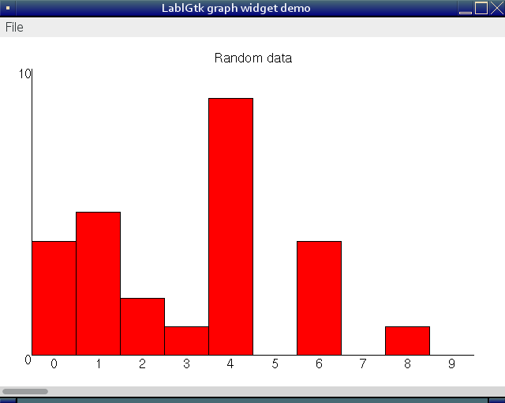

Introduction to Gtk
If you intend to try the code in this tutorial in the
interactive toplevel, you
must first issue (assuming you have installed lablgtk using
opam):
# Topdirs.dir_directory (Sys.getenv "OCAML_TOPLEVEL_PATH");;
- : unit = ()
# #use "topfind";;
Exception: Symtable.Error (Symtable.Undefined_global "Stdlib__stream").
# #require "lablgtk2";;
Unknown directive `require'.
Lablgtk and writing Gtk applications
Gtk+ is a toolkit for writing graphical applications, and lablgtk is the OCaml interface for Gtk. Gtk and lablgtk are available for Unix and Windows platforms.
Lablgtk makes ambitious use of advanced features of the OCaml type system. Make sure you're familiar with labelled and optional arguments and polymorphic variants (labels) or you won't have any idea what's going on in this chapter. As it is, even the author of this tutorial finds ploughing through the lablgtk source code pretty hard work!
Simple lablgtk program
Actually, not so simple. This program has a menu with a "quit" option, and a button in the main area which you can press:
open GMain
open GdkKeysyms
let locale = GtkMain.Main.init ()
let main () =
let window = GWindow.window ~width:320 ~height:240
~title:"Simple lablgtk program" () in
let vbox = GPack.vbox ~packing:window#add () in
window#connect#destroy ~callback:Main.quit;
(* Menu bar *)
let menubar = GMenu.menu_bar ~packing:vbox#pack () in
let factory = new GMenu.factory menubar in
let accel_group = factory#accel_group in
let file_menu = factory#add_submenu "File" in
(* File menu *)
let factory = new GMenu.factory file_menu ~accel_group in
factory#add_item "Quit" ~key:_Q ~callback: Main.quit;
(* Button *)
let button = GButton.button ~label:"Push me!"
~packing:vbox#add () in
button#connect#clicked ~callback: (fun () -> prerr_endline "Ouch!");
(* Display the windows and enter Gtk+ main loop *)
window#add_accel_group accel_group;
window#show ();
Main.main ()
let () = main ()Save this to a file simple.ml and compile it like this:
ocamlc -g -I path/to/lablgtk lablgtk.cma gtkInit.cmo simple.ml -o simplewhere you have to replace path/to/lablgtk by the actual path where
lablgtk.cmi, lablgtk.cma,... are. If you use findlib
(recommended), you can use the following command:
ocamlfind ocamlc -g -package lablgtk2 -linkpkg simple.ml -o simpleThis is what you should see when you run it:

Let's analyse the program line by line to see what's going on.
open GMain
open GdkKeysymsGMain provides useful functions like the Gtk main loop, so I find it a
good idea to always open this module. GdkKeysyms provides some key
definitions, in this case _Q for the Ctrl + Q key combination.
let window = GWindow.window ~width:320 ~height:240
~title:"Simple lablgtk program" () in
let vbox = GPack.vbox ~packing:window#add () in
window#connect#destroy ~callback:Main.quit;Firstly we create the toplevel window. Every Gtk program needs at least
one. Notice three things: firstly GWindow.window is actually a helper
function which creates a window object for you. For various reasons
which we'll discuss in the intensive section at the end of this chapter,
you shouldn't create lablgtk objects using new classname arguments...,
but instead use one of these helper functions. The helper functions are
often named the same as the class which they create. Secondly lablgtk
makes extensive use of the ~label (labelled and optional arguments).
You'll get used to this quickly. Thirdly see the apparently useless ()
(unit) argument to GWindow.window. It's actually not useless, but the
only way for OCaml to tell the difference between a partial and full
function application in the presence of optional arguments.
A vbox is a vertical layout widget. It's a container which contains
other widgets but isn't normally visible by itself. The ~packing
argument looks odd (indeed it is). It's just a shorthand way of writing:
let vbox = GPack.vbox () in
window#add vbox;The two forms are, as far as I can tell, identical. The first way is a bit shorter.
window#connect#destroy ~callback:Main.quit; is an example of
connecting a signal to a function. In this case the destroy signal,
received by the window when someone presses the "X" in the corner, will
cause a call to Main.quit () (note extra unit arg).
Creating the menubar and File -> Quit button is straightforward enough.
Notice the accel_group object which is used to keep track of
accelerator buttons. The menubar is packed first into the vbox:
(* Menu bar *)
let menubar = GMenu.menu_bar ~packing:vbox#pack () in
let factory = new GMenu.factory menubar in
let accel_group = factory#accel_group in
let file_menu = factory#add_submenu "File" in
(* File menu *)
let factory = new GMenu.factory file_menu ~accel_group in
factory#add_item "Quit" ~key:_Q ~callback: Main.quit;Next up we create the button and pack it in the vbox. Notice the
clicked signal which is connected to an anonymous function:
(* Button *)
let button = GButton.button ~label:"Push me!"
~packing:vbox#add () in
button#connect#clicked ~callback: (fun () -> prerr_endline "Ouch!");This line just causes the accelerator keys (eg. Ctrl Q) to work:
window#add_accel_group accel_group;Finally two lines which are essential. All Gtk widgets must be "shown"
before they will appear, by calling the #show method. However lablgtk,
by default, automatically shows all widgets except toplevel windows.
Thus we need to call window#show () explicitly. Main.main () is the
Gtk main loop - the bit which runs and handles events. Gtk is event
driven so everything else happens in a callback as a result of some
signal received.
window#show ();
Main.main ()Gtk tutorial
Read this Gtk tutorial to find out more about Gtk. Lablgtk contains a pretty complete mapping of the Gtk+ API.
Graph widget
Now we're going to get a little bit more adventurous and write our own widget. This is going to be a simple graph, with a scrollbar at the bottom allowing you to scroll left and right through the data. The graph itself is going to be drawn on a Gtk drawing area widget. The Gtk drawing area is very simple, just an empty space in which you can execute your own drawing commands to draw lines, rectangles, text and so on.
Before starting we need to think about the overall structure of our graph widget. I'm going to have it be a vbox, with the drawing area in the top part, and the scrollbar in the bottom part. This is the overall structure of our class:
class graph font ?width ?height ?packing ?show array =
(* The initialization code will go here. *)
object (self)
inherit widget vbox#as_widget
initializer
(* Further initialization will go here. *)
(* Methods will go here. *)
endTo create a widget you will do:
let graph = new graph font arrayThe inherit widget vbox#as_widget is interesting. You'll have to read
the section below entited Structure of lablgtk to understand it fully,
but basically it causes a graph to be a subclass of widget.
Let's have a look at the initialization code in more detail.
class graph font ?width ?height ?packing ?show array =
(* Constants. *)
let page_size = 10 in (* Number of bars on "page". *)
let max_y = 10 in (* Maximum on Y scale. *)
(* Number of data points. *)
let array_size = Array.length array in
(* Create the containing vbox. *)
let vbox = GPack.vbox ?width ?height ?packing ?show () in
(* Create the drawing area. *)
let da = GMisc.drawing_area ~packing:vbox#add () in
let drawable = lazy (new GDraw.drawable da#misc#window) in
(* Create the scrollbar. *)
let adjustment =
GData.adjustment
~lower:0. ~upper:(float_of_int (array_size-1))
~step_incr:1. ~page_incr:(float_of_int page_size) () in
let scrollbar =
GRange.scrollbar `HORIZONTAL ~adjustment ~packing:vbox#pack () in
object (self)
inherit widget vbox#as_widget
initializer
ignore(da#event#connect#expose
~callback:(fun _ -> self#repaint (); false));
ignore(adjustment#connect#value_changed
~callback:(fun _ -> self#repaint ()))
(* Methods will go here. *)
method private repaint () =
(* Repaint the widget. See below. *)
endThe let-bindings before the start of object define constants such as
page_size, but also create the Gtk objects like vbox, drawing area,
scrollbar and adjustment. An adjustment is an abstract object which
records the position of a scrollbar. Notice how in the initializer we
attach a signal to the adjustment so that when the scrollbar moves (i.e.,
adjustment changes) we repaint the whole widget. The private repaint
method is where the action is, as it were. That method will actually be
responsible for drawing the graph, axes, title and so on.
We'll see that in just a moment, but let's concentrate on the simpler methods of the object first:
object (self)
inherit widget vbox#as_widget
initializer (* code concealed, see above *)
(* The title of the graph. *)
val mutable title = "no title"
method set_title t = title <- t
method title = title
(* ... *)
endThe object is going to contain a mutable member, the title, and two
methods to set_title and get title.
Now we come to the repaint method, which is the guts of the widget. This draws the graph in the drawing area:
(* Repaint the widget. *)
method private repaint () =
let drawable = Lazy.force drawable in
let (width, height) = drawable#size in
drawable#set_background `WHITE;
drawable#set_foreground `WHITE;
drawable#rectangle ~x:0 ~y:0 ~width ~height ~filled:true ();
drawable#set_foreground `BLACK;
(* Draw the title. *)
draw_text drawable font `Centre (width/2, 20) title;
(* Draw the axes. *)
drawable#line ~x:40 ~y:(height-40) ~x:(width-40) ~y:(height-40);
drawable#line ~x:40 ~y:(height-40) ~x:40 ~y:40;
(* Which part of the data to display? first .. first+page_size-1 *)
let first_bar = int_of_float adjustment#value in
let data = Array.sub array first_bar page_size in
let bar_width = (width - 80) / page_size in
(* Compute function mapping graph (x, y) to screen coordinates. *)
let map (x,y) =
(40 + x * bar_width, height-40 - y * (height-80) / max_y) in
(* Draw the axes scales. *)
draw_text drawable font `Right (40, height-40) "0";
draw_text drawable font `Right (40, 40) (string_of_int max_y);
for i = 0 to page_size-1 do
let x = 40 + i * bar_width + bar_width/2 in
let y = height-35 in
let v = first_bar + i in
draw_text drawable font `Centre (x, y) (string_of_int v)
done;
(* Draw the data. *)
for i = 0 to page_size-1 do
let (ll_x,ll_y) = map (i, data.(i)) in
let (tr_x,tr_y) = map (i+1, 0) in
draw_rectangle drawable "red" (ll_x, ll_y) (tr_x, tr_y)
doneApart from the calculation of screen coordinates from graph coordinates,
the repaint method is essentially very simple. The Gtk drawing area
contains a drawable object, and we use methods on this object such as
drawable#line plus some helper functions which I haven't reproduced
here to draw in the drawing area. It's really just a matter of
calculating what to draw, where. Notice how we freely access
let-bindings made before object (self), eg. page_size, drawable,
adjustment. These let-bindings are available in any method in the
object.
The complete code for the graph is available in graph.ml and test.ml. Compile it using:
ocamlfind ocamlc -g -package lablgtk2 -linkpkg graph.ml test.ml -o graphtestHere is a screenshot:

Structure of lablgtk
The lablgtk library has two layers, which I'm going to call the module layer and the object-oriented layer (plus some ancillary library modules which we'll also talk about). The layers are arranged like this in relation to your code:
Your code and the Gtk+ library (or DLL on Windows)
- Object-oriented layer (eg.
gButton.ml) - Module layer (eg.
gtkButton.ml, depends onml_gtkbutton.c)
In theory you only need to interact with the object-oriented layer, and the theory is indeed true for trivial programs. However for practical purposes you will need to understand how the library is built up from these layers (and why).
Gtk objects
We'll start with the peculiarities of Gtk itself. This library is written in C and uses macros and "clever" hacks to (a) present an OO-ish interface and (b) perform simple garbage collection through reference counting. Part of the reason why lablgtk uses quite a complex model is to cater for the implementation of Gtk itself.
All "objects" in the Gtk library (I'll call them objects, but in reality
they're C structs) are "derived" from GtkObject. This means that an
object such as a button contains within its struct a
struct _GtkObject. This "base class" contains, amongst other things, a
reference count which is used to provide simple garbage collection.
Of course, the above is all in the context of a C library for C programmers. OCaml has other mechanisms for OO and contains an advanced garbage collector. How does lablgtk unify the two?
Lablgtk starts with this type definition (in module Gtk):
type 'a objOn the face of it, this is a very strange type definition. It defines
a polymorphic type called obj (polymorphic because you can create,
say, int obj, etc.). But it doesn't actually define a way of creating
these objects! [Recall that a normal type definition might be something
like this:
type 'a obj = Something of 'awhich gives you a very definite way to create, say, an int obj:
Something 1But our strange, bare definition just says:
type 'a obj;;How do we create objects of this type? The answer is that we don't.
Instances of type 'a obj are GtkObject structures (actually, more
likely they are "subclasses" of GtkObject), and they are created by
the C library. What precisely happens is that the C functions in the
Gtk+ library are wrapped up by C functions which are called from OCaml.
These functions look like this:
CAMLprim value
ml_gtk_toggle_button_new (value unit)
{
return Val_GtkObject_sink ((GtkObject *) gtk_toggle_button_new ());
}Val_GtkObject_sink is a very complex little function which wraps up
the GtkObject returned from the Gtk+ library function
gtk_toggle_button_new () in something that OCaml's garbage collector
can understand. The same function also deals with Gtk's reference
counting.
static void ml_final_GtkObject_sink (value val) {
if (Field(val,1))
gtk_object_unref ((GtkObject*)Field(val,1));
}
value Val_GtkObject_sink (GtkObject *p) {
value ret;
if (!p) ml_raise_null_pointer ();
ret = alloc_final (2, ml_final_GtkObject_sink, 20, 1000);
initialize (&Field(ret,1), (value) p);
gtk_object_ref_and_sink(p);
return ret;
}OCaml code calls ml_gtk_toggle_button_new directly to create objects
of type 'a obj. Module GtkButton is in lablgtk's module layer and it
contains an inner module called GtkButton.ToggleButton containing a
function defined as:
module ToggleButton = struct
include GtkButtonProps.ToggleButton
let create_check pl : toggle_button obj = Object.make "GtkCheckButton" pl
external toggled : [>`toggle] obj -> unit
= "ml_gtk_toggle_button_toggled"
endYou can call these functions directly to see what they return:
# GtkButton.ToggleButton.create;;
Error: Unbound module GtkButton
# GtkButton.ToggleButton.make_params;;
Error: Unbound module GtkButton
Notice the return type: toggle_button obj (ie. a definite instance of
the polymorphic type 'a obj). What is toggle_button? It's a type
(think 'a list vs. int list) defined like this (in module Gtk):
type widget = [`base|`widget]
type container = [widget|`container]
type button = [container|`button]
type toggle_button = [button|`toggle]Hence the full type written out is:
type toggle_button = [`base|`widget|`container|`button|`toggle](These are polymorphic variants).
If you check the Gtk class hierarchy you'll see that the list of variants closely (but not exactly) matches the classes. A Gtk toggle button is-a Gtk button, Gtk container is-a Gtk widget, etc.
Object-oriented layer
Now let's look at the object-oriented layer interface to the toggle
button, so we can see how 'a obj comes into play. The GButton module
defines a class for toggle buttons, but unusually you don't directly
create instances of this class using new toggle_button (or similar).
Instead a function is provided which generates instances for you. Here
it is, simplified somewhat:
let toggle_button ?label ?show () =
Button.make_params [] ?label ~cont:(
ToggleButton.make_params ~cont:(
pack_return (fun p -> new toggle_button (ToggleButton.create p))))The class created by new toggle_button is like this
(simplified):
class toggle_button w = object
inherit button w
method connect = new toggle_button_signals obj
method active = ToggleButton.get_active obj
method set_active = ToggleButton.set_active obj
method set_draw_indicator = ToggleButton.set_mode obj
endThe base class for all objects is GObj.gtkobj defined as:
class gtkobj w = object
val obj = w
method destroy () = Object.destroy w
method get_id = Object.get_id w
endSo all classes, including toggle_button, have access to their
underlying object (the GtkObject allocated in C) through the obj
member, and have #destroy and #get_id methods. All classes derived
from widget have a public #as_widget method which returns the
underlying object (sadly there is no equivalent for gtkobj, although
this doesn't matter so much since almost all interesting classes are
widgets).
Let's try the OO interface for toggle buttons:
# (* Call the toggle_button function. Note: returns object from
toggle_button class*)
let b = GButton.toggle_button ~label:"Push me!" ();;
Error: Unbound module GButton
# b#as_widget
(* note: returns a widget obj == [`base|`widget] obj *);;
Error: Unbound value b
Downcasts
Gtk is dynamically typed, and this means you can downcast, for example, a widget into a toggle button. Gtk requires downcasting in some instances: for example you can pack widgets into containers, but if you try and retrieve them out of the container, all you get is a list of widgets. The original type of the widgets is lost. Assuming you know that a widget is really, say, a button, then Gtk requires you to downcast the widget to a button in order to use the button-like features.
Such an operation is normally illegal in OCaml because OCaml is strongly typed at compile time and downcasting is unsafe. The widget might or might not actually be a toggle button. Lablgtk allows downcasting, and provides another mechanism for casting which avoids the explicit downcast. Whichever way you do it, you may get a runtime exception if you cast to the wrong type.
The simplest downcast is just to unwrap the 'a obj (GtkObject) from
one class and wrap it in another class. Here we take the children out of
a table widget, which we happen to know are actually all vboxes, unwrap
each one from the widget class and rewrap in a GPack.box class.
(Example due to Jacques Garrigue.)
let vbox_of_widget widget =
let obj = GtkPack.Box.cast widget#as_widget in
new GPack.box obj
let vboxes = List.iter vbox_of_widget table#childrenThe terminology might be a little bit confusing here because the
#as_widget method returns the internal GtkObject of type 'a obj.
GtkPack.Box.cast does the actual unsafe downcast. Downcasts can always
fail at runtime, and in the case above the Cannot_cast exception could
be thrown. You should be prepared to deal with this - unfortunately it's
a program bug which cannot be picked up at compile time.
The other method for doing this avoids the explicit downcast, but can
still throw an exception indicating a program bug at runtime. The
strategy here is to remember what objects we put into the container
separately, and when we take them out try to match them up. We use the
GUtil.memo class for this:
class ['a] memo () = object
constraint 'a = #widget
val tbl = Hashtbl.create 7
method add (obj : 'a) =
Hashtbl.add tbl obj#get_id obj
method find (obj : widget) = Hashtbl.find tbl obj#get_id
method remove (obj : widget) = Hashtbl.remove tbl obj#get_id
end(The constraint essentially says that 'a must be a widget, or some
subclass of widget).
Here is an example of using a memo. First we will create a top-level window, a container (vbox) to go inside this, and a button:
# let w = GWindow.window ();;
Error: Unbound module GWindow
# let c = GPack.vbox ~packing:w#add ();;
Error: Unbound module GPack
Hint: Did you mean Stack?
# let b = GButton.button ~label:"Push me!" ();;
Error: Unbound module GButton
Before we pack the button into the container, let's create a memo to remember the real object. Notice how the type of the memo is refined as soon as the button is added:
# let m = new GUtil.memo ();;
Error: Unbound module GUtil
# m#add b;;
Error: Unbound value m
# m;;
Error: Unbound value m
Now we can add the button to the container, remembering to upcast it to a widget first of course:
# c#add (b :> GObj.widget);;
Error: Unbound value c
The method #children returns a list of widgets. Not much use to us:
# c#children;;
Error: Unbound value c
But we can use our memo to map these widgets to the original button objects:
# List.map (fun w -> m#find w) c#children;;
Error: Unbound value m
Remember that this is still dynamic casting, and so unsafe. In this case
the memo will throw a Not_found exception if the widget cannot be
mapped:
# let b2 = GButton.button ~label:"Don't push me!" ();;
Error: Unbound module GButton
# c#add (b2 :> GObj.widget);;
Error: Unbound value c
# List.map (fun w -> m#find w) c#children;;
Error: Unbound value m
Structure of lablgtk — summary
GtkObjects allocated by the C library are wrapped up in opaque'a objabstract types.- The module layer is flat (not OO) but uses polymorphic variants to simulate a class hierarchy.
- The module layer handles Gtk's reference counting for you transparently.
- Classes in the OO layer store the opaque
GtkObjectin a member calledobj, and perform operations through the module layer, usually passingobjas the first parameter. - Helper functions are provided to create instances of classes.
- Lablgtk provides two ways to perform downcasting, but this doesn't change the fact that downcasting is unsafe and can throw exceptions at runtime.